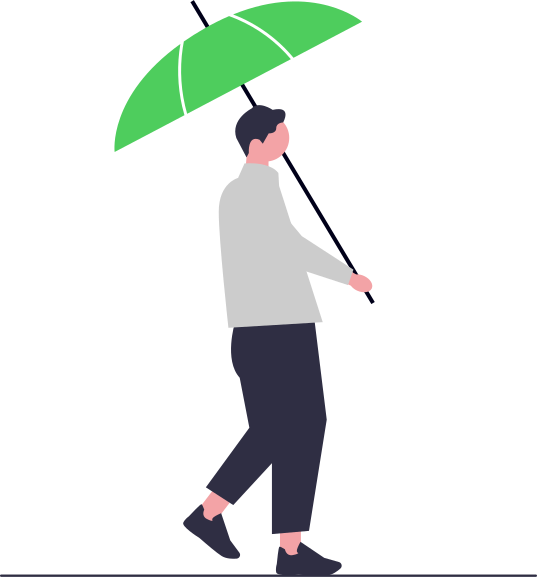
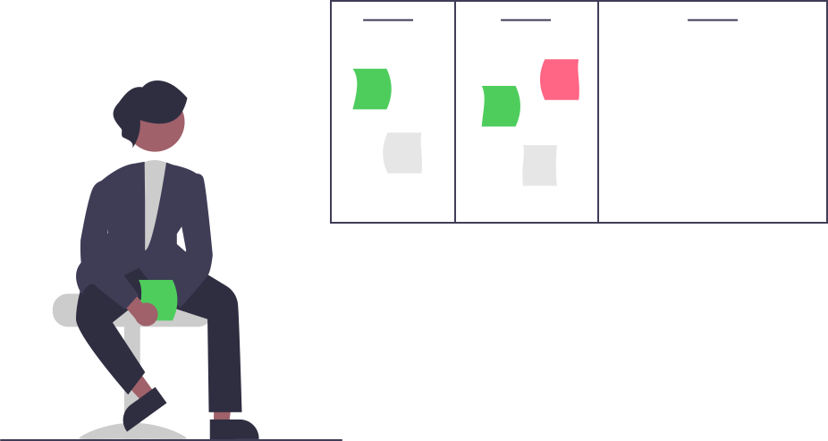
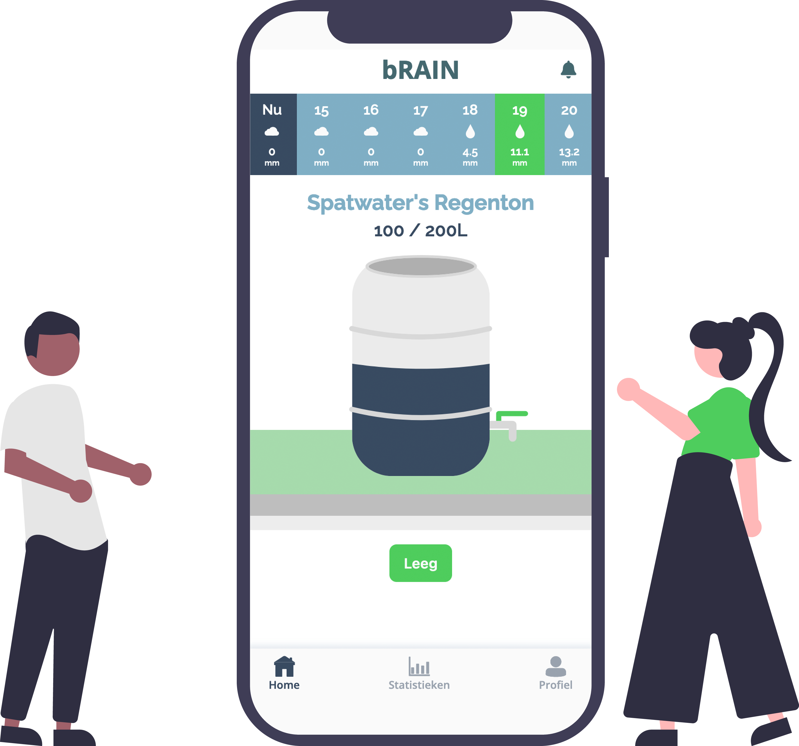

Welkom bij b-RAIN, de toekomst van ons water
Klimaatverandering zorgt voor meer droogte en wateroverlast door intense buien Ons riool kan al dat water bij een bui vaak niet aan, en zorgt voor wateroverlast en vervuild rioolwater in ons toch al kwetsbare oppervlaktewater Het is tijd om massaal ons regenwater vast te houden en her te gebruiken. ... Nederland heeft ongeveer 15 miljoen regenpijpen. Als je een (kleine) regenton installeert van 100 liter, en je leegt een volle ton tien keer in een jaar in je tuin of op je bedrijventerrein... Dan ontlasten we ons riool met 1.5 miljard liter water per jaar Maar hoe zorg je ervoor dat dit gebeurt zonder dat je zelf elke keer de kraan van je regenwateropslag open hoeft te zetten? Het is tijd om slim met ons water om te gaan: be b-RAIN!
Wat is b-RAIN?
b-RAIN is de manier om zo optimaal mogelijk om te gaan met de neerslag rondom je huis. Met slimme technologie, gebaseerd op weersvoorspellingen, regelt ons product automatisch de hoeveelheid water in de regenton, zodat je altijd het meeste uit je waterreservoir haalt zonder er tijd aan kwijt te zijn. ... Als de regenton vol zit en er is een hevige bui voorspeld, dan leegt de ton zich automatisch om de piekbui op te vangen. Als er droogte voorspeld is, houdt de regenton zoveel mogelijk water vast. Dit water kan je op een optimaal moment inzetten, zoals het beregenen van groen of het wassen van je auto. De b-RAIN app communiceert met onze slimme kraan en geeft je inzicht in hoeveel water er al bespaard is, wat de neerslagverwachting is en wanneer je je tuin het beste water kan geven.
Het probleem en de oplossing
Waarom b-RAIN?
Onze wereld wordt geconfronteerd met steeds extremere weersomstandigheden. We krijgen te maken met langdurige droogte en intensere neerslag. Dit zorgt ervoor dat we, om de stad leefbaar te houden, beter voorbereid moeten zijn op dergelijke extremen. Iedereen kan helpen in deze opgave: bewoners, bedrijven en gemeenten. Door water op te slaan in periodes dat het regent en te gebruiken als het nodig is maken we onze omgeving klimaatadaptiever. ... Dit kunnen we doen aan de hand van regenwateropslag systemen zoals regentonnen. Traditionele regentonnen zijn een geweldige manier om regenwater op te vangen en te hergebruiken, maar ze hebben beperkingen. Vaak moeten ze handmatig worden beheerd, en dat kan een hele klus zijn. Bovendien kunnen ze overlopen bij zware regenval, wat leidt tot verlies van water en mogelijke schade. Aan de andere kant kunnen ze leeg raken tijdens droge periodes, waardoor we gedwongen worden om ons toevlucht te nemen tot kostbaar kraanwater. Wat b-RAIN onderscheidt, is de verhoogde effectiviteit van de regenwateropslag. Ons systeem maakt gebruik van real-time weersinformatie om te bepalen wanneer en hoeveel water er aan je regenton moet worden toegevoegd. Dit betekent dat je altijd de optimale hoeveelheid water hebt, ongeacht de weersomstandigheden. Het voorkomt niet alleen verspilling, maar maximaliseert ook de beschikbaarheid van water wanneer je dit het meeste nodig hebt. Dit resulteert in aanzienlijke besparingen, zowel op je waterrekening als voor het milieu.

De Brain-app
Met behulp van de gratis Brain-app heeft u ieder moment van de dag inzicht in uw wateropslag. Op deze manier krijgt u inzicht in de hoeveelheid water die u beschikbaar heeft, hoeveel u bespaard heeft maar ook wat de verwachtte wateropslag is voor de komende zeven dagen.

Ervaringen
5★★★★★
-
5 sterren
-
4 sterren
-
3 sterren
-
2 sterren
-
1 ster
-
★★★★★09-10-2023
Mees
Met b-RAIN is mijn tuin altijd groen en weelderig, ongeacht het weer. Het systeem beheert het water op een slimme manier en zorgt ervoor dat ik nooit verspil.
-
★★★★★09-10-2023
Timo
Ik hou van de duurzame benadering van b-RAIN. Het systeem bespaart water en is goed voor het milieu.
-
★★★★★09-10-2023
Jesse
Met b-RAIN hoef ik me nooit meer druk te maken over mijn regenton. De slimme technologie zorgt ervoor dat ik altijd voldoende water heb voor mijn tuin, zonder dat ik er veel tijd aan kwijt ben.
-
★★★★★09-10-2023
Mees
De automatische afvoer bij regenachtig weer en het vasthouden van water tijdens droge periodes is briljant.
Contact
Kom met ons in gesprek!
Stuur ons een mail
SPATwater
info@spatwater.nl
Link naar de website van SPATwater
SPATwater